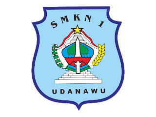
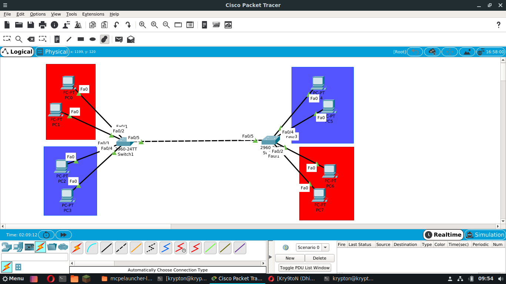
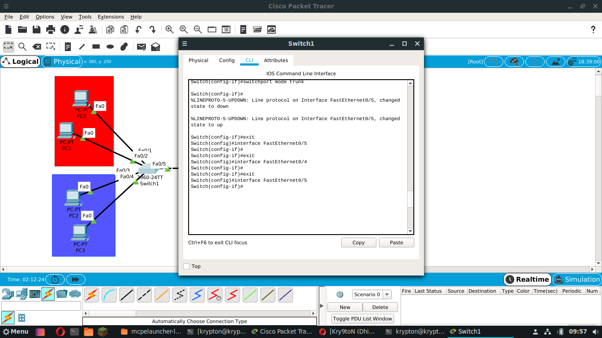
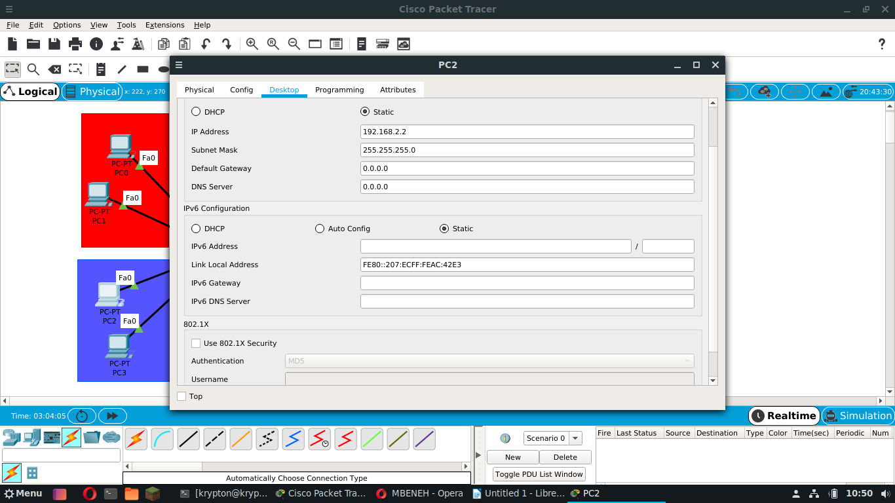
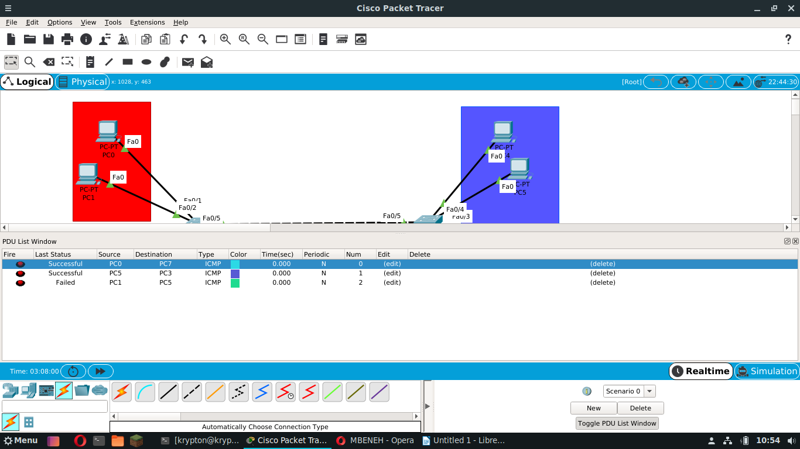

Configurasi VLAN

Nama : Dhimas Bagus Prayoga
Kelas : XI TKJ - 1
No. Absen : 09
Mapel : Administrasi Infrastruktur Jaringan (AIJ)
A. Tujuan Pembelajaran
• Siswa dapat mengetahui cara menggunakan metode jaringan VLAN.
B. Alat dan Bahan
• Seperangkat komputer.
• Software Cisco Paket Tracer.
C. Langkah – langkah
1. Membuat topologi seperto gambar dibawah ini:

2. Selanjut nya kita settings switch pertama menguunakan CLI

Menggunakan command di bawah ini unutk mendefinisikan vlan
Switch>en Switch#conf t Enter configuration commands, one per line. End with CNTL/Z. Switch(config)#vlan 10 Switch(config-vlan)#name TKJ Switch(config-vlan)#vlan 20 Switch(config-vlan)#name RPL Switch(config-vlan)#exit Switch(config-if)#end
Dan untuk mensettings port di switch memakai command di bawah
Switch#conf t Enter configuration commands, one per line. End with CNTL/Z. Switch(config)#int fa0/1 Switch(config-if)#switchport mode access Switch(config-if)#switchport access vlan 10 Switch(config-if)#exit Switch(config-if)#int fa0/2 Switch(config-if)#switchport mode access Switch(config-if)#switchport access vlan 10 Switch(config-if)#exit Switch(config-if)#int fa0/7 Switch(config-if)#switchport mode access Switch(config-if)#switchport access vlan 10 Switch(config-if)#exit Switch(config-if)#int fa0/3 Switch(config-if)#switchport mode access Switch(config-if)#switchport access vlan 20 Switch(config-if)#exit Switch(config-if)#int fa0/4 Switch(config-if)#switchport mode access Switch(config-if)#switchport access vlan 20 Switch(config-if)#exit Switch(config-if)#int gig0/1 Switch(config-if)#switchport mode trunk Switch(config-if)#exit Switch(config)#end
3. Settings IP PC
Contoh untuk PC merah
Contoh PC berwarna biru


D. Kesimpulan
“Untuk membuat jaringan dengan metode VLAN, diperlukan unsur-unsur dari kerja prestative karena untuk setting switch pada opsi CLI terbilang cukup mudah tetapi merepotkan dan meyusahkan.”